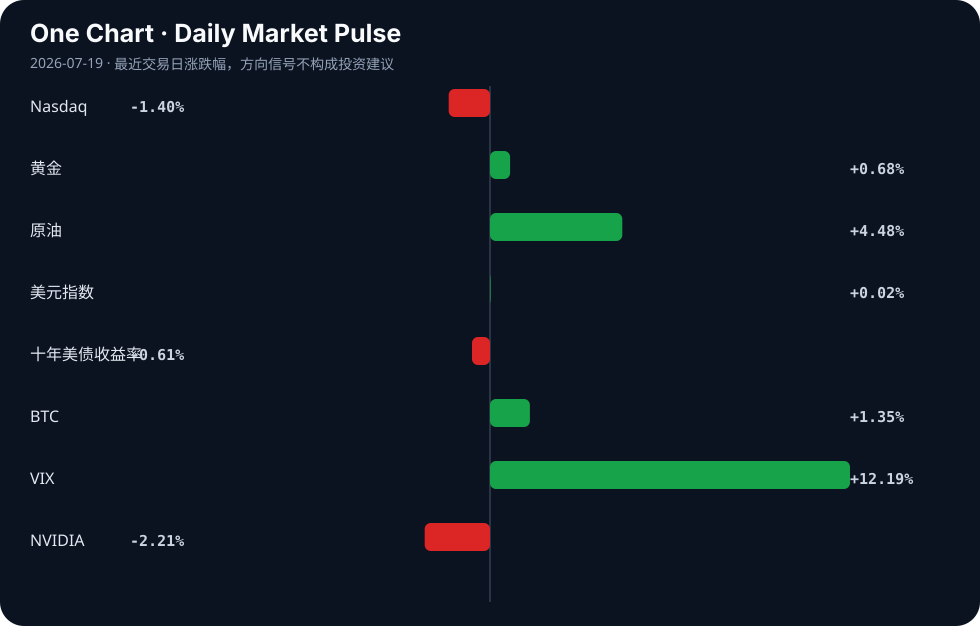

Daily Intelligence
2026-07-19｜Sunday
Today’s Thesis｜今日一句话
AI 正从应用层叙事向底层基础设施与安全合规硬约束演进，而宏观地缘风险正迫使资本从虚向实转移，两者交汇将重塑科技定价锚。
① Executive Summary｜30 秒
- AI：WAIC 2026 展示 AI 具象落地（具身智能、Agent）及主权补贴加码 [A7][A15]，同时安全合规工具与监管禁令密集涌现 [A8][A9]。
- 商业：硬件制造与供应链韧性成为战略焦点 [B16][B7]，地缘危机正威胁全球 20% 石油流动并推升实体通胀 [B8]。
- 宏观：中国纸黄金交易关闭与非洲稀土激增 [B5][B4]，标志着主权国家正通过控制实物资产重构全球定价权与供应链安全。
② AI Daily
1. 主权 AI 基础设施与具身智能加速落地
What Happened：2026 世界人工智能大会（WAIC）公布时间表，人形机器人将上岗当志愿者，最高补贴达 4000 万 [A12][A15]；算力与数据布局进入太空，为智能体提供“地球真值” [A10]。 Why It Matters：AI 发展从纯软件模型竞赛，转向软硬一体的物理世界交互。太空算力与真值数据标志着数据获取绕过地面物理与法律限制，进入主权级部署。 Second-order Effect：主权补贴 → 具身智能与太空算力落地 → 物理世界数据闭环与合规硬约束形成。
2. AI 安全与合规的刚性边界确立
What Happened：开源静态 AI 风险分析器 SafeAI 发布 [A8]；市长 Mamdani 宣布房东禁止使用 AI 图像广告，以防虚假呈现 [A9]。 Why It Matters：AI 生成内容的低成本正引发信任崩塌，监管从平台自律升级为法律禁令与静态代码级拦截。AI 的可用空间正在被合规切割缩小。 Second-order Effect：AIGC 滥用 → 信任流失与监管禁令 → 合规工具（SafeAI）成为 Agent 上线的前置刚需。
3. 消费级 AI 的定价天花板与自主性突破
What Happened：20 美元/月成为 AI 公司普遍复制的价格天花板 [A18]；开发者利用 Kimi k3 在数小时内自主构建了 Ilya 论文学习 RPG [A2]。 Why It Matters：[A18] 暗示消费级 AI 订阅已触及用户支付意愿上限，陷入通缩式竞争；[A2] 则表明开发门槛极速降低，个人开发者借力大模型可完成全栈构建，传统 SaaS 中间件价值被压缩。 Second-order Effect：大模型能力平民化 → 软件开发成本骤降 → 消费级 AI 只能靠极低月租竞争，利润向底层算力与主权级应用集中。
③ Business Daily
科技与制造
格罗方德将新加坡提升为下一代 AI 硬件制造战略基地 [B16]，加拿大推进主权量子与超算未来 [B22]，印度与芬兰深化技术与制造合作 [B21]。全球核心经济体正在将算力制造与供应链本土化视为国家安全底线，而非单纯的成本优化。
能源与资源
雪佛龙依靠技术优化生产 [B11]，非洲稀土供应在 2026 年激增 [B4]。在地缘危机威胁全球 20% 石油流动的背景下 [B8]，能源公司转向技术降本增效，而稀土供应的多元化是重构 AI 硬件制造供应链的关键前置条件。
医疗
制药会议达成 15 亿美元协议与谅解备忘录 [B6]，但中国多家血制品企业因竞争加剧与税改落地预告半年业绩腰斩 [B19]。医疗行业呈现极端分化：创新药与前沿疗法吸金，而传统血制品面临政策与存量博弈的双重挤压。
④ Macro Observation｜机制分析
世界正在发生什么？ 地缘政治危机（以色列-美国与伊朗紧张局势）正在直接影响全球航运与石油供应链 [B3][B8]。同时，中国关闭纸黄金交易 [B5]，并寻找 1250 亿美元的泄压阀应对经济动能不足 [B12]。
为什么发生？ 全球化信任基础瓦解。西方面临“第二次中国冲击” [B10]，传统供需与金融管道失效。主权国家不再信任纸面资产与远端供应链，转而寻求实物资产（黄金、稀土、石油）与本土产能的控制权。
资本如何流动？ 资本正呈现“避险+通胀对冲”的双轨流动：涌入黄金（中国纸黄金关闭抬升实物需求 [B5]）、BTC（SEC 批准更高 IBIT 期权限额 [B14]）及本土制造（格罗方德 [B16]）；同时撤离依赖全球无缝流动的脆弱环节。Coinbase 承认疏远加密原生用户 [B1]，暗示合规资本与原生去中心化资本的剥离。
接下来关注什么？ 关注地缘冲突对供应链的实体阻断是否转化为持久通胀，以及央行（如面临 Warsh 美联储政策的比特币交易员 [B2]）在“保金融稳定”与“抗通胀”间的政策撕裂。反身性风险：油价上涨 → 通胀预期上行 → 资本进一步涌入实物资产 → 脆弱经济体滞胀压力加剧。
⑤ Signal Dashboard
| 指标 | 最新值 | 今日 | 信号 |
|---|---|---|---|
| Nasdaq | 25,520.24 | ↓ -1.40% | 风险偏好降温 |
| 黄金 | 4,012.70 | ↑ +0.68% | 避险/通胀对冲增强 |
| 原油 | 82.49 | ↑ +4.48% | 通胀压力上升 |
| 美元指数 | 100.75 | → +0.02% | 中性 |
| 十年美债收益率 | 4.54 | ↓ -0.61% | 利好久期资产 |
| BTC | 64,764.32 | ↑ +1.35% | 风险偏好改善 |
| VIX | 18.77 | ↑ +12.19% | 避险升温 |
| NVIDIA | 202.81 | ↓ -2.21% | 风险偏好降温 |
⑥ Deep Insight
AI 双轨经济：20 美元消费级陷阱与主权级通胀的决裂
当前 AI 产业正在发生一场隐秘而致命的决裂：一端是消费级 AI 陷入 20 美元/月的定价天花板陷阱 [A18]，另一端是主权级与基础设施级 AI 正在进入资本开支极度膨胀的通胀周期。市场仍将 AI 视为统一的叙事进行定价，但这两种截然不同的商业机制即将撕裂估值体系。
消费级 AI 的 20 美元天花板本质上是通缩陷阱。当所有竞争者（从巨头到独立开发者）都能利用类似的基础模型（如 Kimi k3 在几小时内自主构建全栈应用 [A2]）时，软件的边际开发成本趋近于零。在产品差异度无法显著拉开的情况下，订阅制价格只能锚定用户的心理账户下限。这意味着消费级 AI 应用将重演早期云办公软件的价格战，毛利率被极度压缩，无法支撑高昂的算力推理成本，最终只能依附于巨头的生态补贴存活。
与此形成鲜明对比的是，主权级与具身智能 AI 正在进入重度资本开支的通胀周期。WAIC 2026 中最高 4000 万的补贴 [A15] 并非市场化定价，而是国家安全与产业主导权的溢价。算力与数据布局进入太空 [A10]、格罗方德将新加坡提升为硬体制造战略基地 [B16]，这些动作的资本密度、物理约束和回报周期，与 SaaS 订阅制完全不同。物理世界的 AI 落地（具身机器人、太空真值数据）需要解决材料、能源、制造和合规的硬约束，这些约束不会服从摩尔定律的指数衰减，而是受制于传统供应链的线性甚至摩擦性增长。
这种决裂的机制在于：底层算力与物理数据源的获取成本正在通胀（地缘阻断、稀土争夺 [B4]、合规拦截 [A9]），而顶层应用的变现能力正在通缩。中间的差值必须由某个环节买单。在缺乏足够商业闭环前，主权补贴填补了这一差值，但这扭曲了市场信号，使得大量资本涌入硬体基建，而消费级应用开发者在天花板下内卷。
反方观点：规模效应与算法效率的跃升（如更小的模型达到同等性能）将大幅降低推理与物理部署成本，使得主权级 AI 基建成本最终也会商品化。20 美元天花板只是暂时的市场出清阶段，一旦 Agent 杀手级应用出现，用户支付意愿将突破当前上限，实现量价齐升。
证伪条件：1) 消费级 AI ARPU 值在未来两季度突破 20 美元并实现高毛利留存；2) 主权级 AI 项目（如太空算力、人形机器人）在补贴退坡后无法实现自我造血的现金流，沦为沉没成本。
⑦ Tomorrow Watch
1. 验证 WAIC 2026 人形机器人作为志愿者上岗的实际交互与故障率数据 [A12]。
2. 追踪中国纸黄金交易关闭后，伦敦金与上海金溢价的变化及实物交割风险 [B5]。
3. 观察以色列-伊朗危机是否导致霍尔木兹海峡通行保费（战争风险险）跳升 [B3]。
4. 检验 SEC 批准更高 IBIT 期权限额后，BTC 现货与期权市场的对冲比例变化 [B14]。
5. 关注 NBER 关于生成式 AI 转变创业精神的论文发布，验证其对微观创业存活率的量化结论 [A6]。
⑧ One Chart

图表显示 VIX 急升与原油大涨同步发生，而纳指下挫、美债收益率下行。这并非简单的风险偏好下降，而是市场在为地缘冲突引发的供给侧通胀定价，资金同时在撤离成长股并买入久期资产与硬通货，呈现出典型的滞胀前期资产配置特征。⑨ Quote of the Day
“The big money is not in the buying and selling, but in the waiting.”
— Charlie Munger
中文理解：真正的大钱往往不来自频繁买卖，而来自有判断后的耐心等待。
Why it matters today：这句话不是装饰，而是今天观察 AI、商业和宏观变化时的一个思考框架：先看机制，再看价格；先看约束，再看叙事。
⑩ Action Items｜今天值得思考什么
1. 关注 AI 合规工具（如 SafeAI [A8]）的采用率，它可能成为 Agent 大规模部署的隐性瓶颈。
2. 验证 非洲稀土 2026 激增 [B4] 的实际产能释放节奏，是否足以对冲地缘危机对现有供应链的冲击。
3. 比较 消费级 AI 20 美元月租 [A18] 与具身智能 4000 万补贴 [A15] 的资本回报预期差异。
4. 追踪 中国 1250 亿泄压阀 [B12] 的具体流向，判断是托底旧动能还是注入新基建。
5. 思考 当 AI 生成内容面临法律禁令（如房东广告 [A9]）时，数据清洗与合规审计的创业机会。
信息边界
本报告事实来源仅限提供的 Hacker News、Google News 等二手聚合源。AI 技术进展与商业政策细节可能存在滞后或翻译损耗，重要判断需回溯原文验证。市场数据反映最近交易日收盘或盘中状态，非实时报价。对因果链与反身性的推演属于基于给定事实的推断，非已确认事实。
Sources
AI
- A1：Show HN: Karyfy – AI job-search workspace (matching, tracking, interview prep) — Hacker News · AI
- A2：Show HN: Ilya Sutskever's AI reading list into a learning RPG – using kimi k3 — Hacker News · AI
- [A6：Prompted to Start: How Generative AI Is Transforming Entrepreneurship [pdf]](https://conference.nber.org/conf_papers/f238865.pdf) — Hacker News · AI
- A7：现场直击！2026世界人工智能大会：AI具象落地提速|具身智能机器人|AI技术|上海市|Agent|AI耳机_手机新浪网 - 新浪财经 — Google News · AI 中文
- A8：SafeAI – Open-Source Static AI Risk Analyzer for AI Agents — Hacker News · AI
- A9：Mayor Mamdani Says Landlords Can't Use AI Images to Advertise — Hacker News · AI
- A10：人工智能算力和数据布局进入太空，为AI智能体提供“地球真值”数据 - 手机新浪网 — Google News · AI 中文
- A12：2026上海AI时间表公布！人形机器人将上岗当志愿者 - 手机新浪网 — Google News · AI 中文
- A15：最高补贴4000万！WAIC举办途中重磅政策落地 - 手机新浪网 — Google News · AI 中文
- A18：$20/Month: The Price Ceiling Every AI Company Copied — Hacker News · AI
Business & Macro
- B1：Coinbase Trading Lead Cobie Admits Exchange “Distant From Crypto-Native Users” as Trust Frays - CryptoRank — Google News · Markets Policy
- B2：Bitcoin Traders Face Warsh Fed as Policy-Relevant Cues Fall to 5% - Bitget — Google News · Markets Policy
- B3：Expert Highlights Impacts Of Israeli-American Iran Crisis On Global Shipping Economy - Independent Newspaper Nigeria — Google News · Global Economy
- B4：Africa’s Rare Earths Supply Comeback: What’s Driving the 2026 Surge - Discovery Alert — Google News · Global Economy
- B5：China’s Paper Gold Trading Shutdown and Its Global Price Impact - Discovery Alert — Google News · Markets Policy
- B6：$1.5b deals, MoUs inked at pharma conference - The Express Tribune — Google News · Technology Business
- B7：Canada's emerging science of resilient supply chains: A homegrown approach to managing uncertainty - Digital Journal — Google News · Technology Business
- B8：Bitcoin is trading through a dangerous weekend as 20% of the world’s oil hangs in the balance - CryptoRank — Google News · Markets Policy
- B10：The U.S. saw the first ‘China Shock.’ Now the world gets the sequel. - The Washington Post — Google News · Global Economy
- B11：Chevron banks on technology to optimize production - Midland Reporter-Telegram — Google News · Technology Business
- B12：China found a $125 billion escape valve for an economy running out of momentum - CryptoRank — Google News · Markets Policy
- B14：SEC Approves Higher IBIT Options Limits As Bitcoin ETF Market Matures - CryptoRank — Google News · Markets Policy
- B16：Globalfoundries elevates singapore as strategic base for next gen ai hardware manufacturing - Indiatimes — Google News · Technology Business
- B19：竞争加剧叠加税改落地，多家血制品企业预告半年业绩腰斩 - 21财经 — Google News · 行业
- B21：Piyush Goyal holds talks with Finnish firms to deepen India-Finland partnership in technology, manufacturing - ET Government — Google News · Technology Business
- B22：Queen's University and Université de Sherbrooke come together to advance Canada's sovereign quantum and supercomputing future - AOL.com — Google News · Technology Business